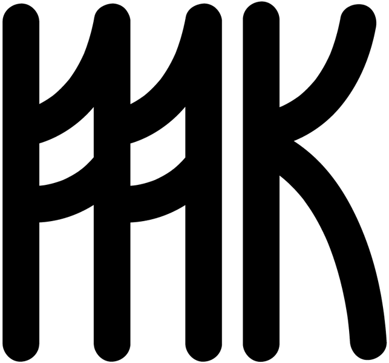

Mare Karina is a studio founded by Marta Barina and Jure Kastelic.
We share an interest in innovative technologies applied to art. Jure is an artist and bitcoin researcher, Marta is a strategist and producer. We are a hybrid between an artist studio, gallery and agency, leveraging the widely available digital tools in the post-covid era. We firmly believe in continuous disruption, the future of no middlemen, no gatekeeping, decentralisation, and cyberspace as a means to transcend locality.
Our collaboration started by setting up an exhibition in the Canary Islands and organising remote virtual tours, offering Bitcoin cashback on purchases of artworks, and sharing the basics of bitcoin philosophy to buyers and supporters.
Mare Karina’s upcoming projects are a mixture of art, fashion, collecting, and cross-industry collaborations leveraging our understanding of art and tech to promote the quality and beauty of living.